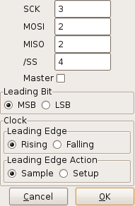
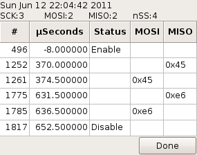

logic_sniffer.py
SPI Analyzer Settings
Specific settings for SPI data analysis are controlled from this dialog:

The various fields are:
- the channel supplying the SCK (serial clock) signal.
- the channel supplying the MOSI (Master-Out/Slave-In) signal.
- the channel supplying the MISO (Master-In/Slave-Out) signal.
- the channel supplying the negative-logic Slave-Select signal.
-
- the most-significant bit of a byte is received earliest.
- the least-significant bit of a byte is received earliest.
-
-
- the rising edge of an SCK pulse is the leading edge.
- the falling edge of an SCK pulse is the leading edge.
-
-
-
Control Buttons
- accepts the SPI analysis settings.
- throws away the values entered with no further action.
SPI Data Analysis

The analysis is displayed in a separate window as a multi-column table.
The sample number and time from the trigger are displayed in the first two columns.
The third column shows the status of the Slave-Select pin.
Master-Out and Master-In bytes are shown in the last two columns.